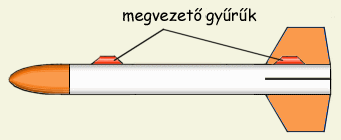
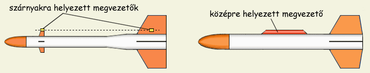
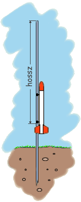
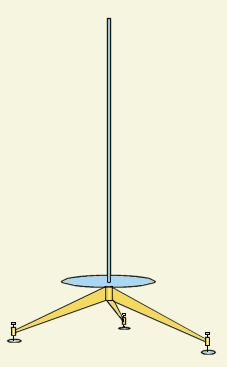

|  |
| 1. Ábra: Két megvezető gyűrű a rakétán |
A megvezetők felfogatási helyét két szempont szerint szerint lehet meghatározni. Stabillitási szempontokat figyelembe véve a füleket a nyomásközépponthoz (CP) viszonyítva szimmetrikusan helyezzük el. Ha a kilövőállványon való legjobb viselkedést szeretnénk elérni, akkor inkább a tömegközépponthoz (CG) képest alakítjuk ki a szimmetriát. Asszimetrikus tolóerő estén (amit pontatlan rakétaépítés vagy több motor használata okozhat) ugyanis a tolóerő a CG körül próbálja elfordítani a rakétát, az ettől egyenlő távolságra elhelyezett megvezető gyűrűk és kilövőállvány között azonos mértékben nő meg a súrlódás, ezért kisebb az esélye a rakéta "megszorulásának" valamelyik gyűrű miatt.
A fenti elméleti megfontolások eredménye az, hogy a gyakorlatban mindenki oda teszi a megvezető füleket ahová akarja. A rakéta alakja is meghatározó lehet, változó átmérőjű rakétáknál például az elülső megvezetők gyakran a kisegítő vezérsíkok végére kerülnek. A hátulsó gyűrűket bevett szokás a szárnyak és törzs találkozásánál elhelyezni, így nagyobb felületen ragasztható a rakétához. Mindenképpen ajánlatos valamiféle szimmetriát betartani, így a megvezetők jó eséllyel nem okoznak gondot sem a kilövés, sem pedig a repülés során. Lényeges, hogy a megvezető gyűrűk pontosan ugyanazon, a rakéta hossztengelyével párhuzamos tengelyen helyezkedjenek el. Ellenkező esetben nagy valószínűséggel el fog akadni a rakéta a kilövőn. A mellékelt ábrákon a fülek elhelyezésének néhány elterjedtebb módja látható.
|  | 2. Ábra: Két megvezető gyűrű változó átmérőjű rakétán, illetve egy középre helyezett hosszú megvezető |
Nagy rakéták esetén meglehetősen egyszerű a megvezető gyűrűk felfogatása, mert a nagy méretek miatt kényelmesen dolgozhatunk és többféle rögzítési módszerre is lehetőség nyílik, kisebb rakétáknál azonban a ragasztás marad az egyetlen rögzítési módszer. Ragasztóként acetonban oldott celluloid vagy körömlakk felel meg leginkább (műanyag gyűrűket és festett rakétatestet feltételezve), de lehet kísérletezni epoxyval is. A megvezető gyűrűk rakétatesttel érintkező oldalát érdemes hosszabra hagyni (azaz rézsútosan vágni), így nagyobb felületen lehet ragasztani. Kis rakétákhoz (<120 g) én mindig műanyag szívószálból készült megvezetőket használok és oldott celluloiddal ragasztom a rakéta törzséhez. A műanyag szívószál belső átmérője kb. 5 mm, kilövőállványként pedig 4 mm-es acélrudat használok ezen rakétákhoz, a megszorulás esélye tehát gyakorlatilag nulla. Vastagabb inditóállvány használata esetén alumíniumlemezből készítem a gyűrűket. Nagyon jól bevált erre a célra a befőttesüvegek fémfödele is, ollóval vágható, könnyen hajlítható és egyik oldala festett, ami megkönnyíti a ragasztást. Fémlemezből készült megvezetők végét érdemes kicsit megreszelni, különben az éles végek könnyen megakadhatnak az indítóállványon.
A kilövő- vagy indítóállvány a rakétát a repülés első pillanataiban hivatott irányítani, megadva ezáltal a kívánt repülési irányt. Legegyszerűbb formájában egyik végén kihegyezett acélrúd, amelyet kb. egynegyedéig a földbe szúrunk (vezető rúd). Az indítóállványra valamilyen akadékot is kell szerelni, amely megakadályozza, hogy a rakéta a földig csússzon. Legjobb ha ez az akadék mozgatható, mivel különböző méretű rakétákhoz különböző hosszúságú kilövőállvány szükséges. Kis tolóerejű motrok megsegítésére egy merőleges fémlapot is ráerősíthetünk az állványra, közvetlenül az akadék alá. A legtöbb rakétához ez nem szükséges. Egy ilyen egyszerű kilövőállvány a lenti ábrán látható.
A vezető rúd hossza az indítandó rakéta méreteitől, elsősorban ennek tömegétől függ. Minél nehezebb a rakéta, annál hosszabb kilövőállvány kell neki. Természetesen nem önmagában a tömeg meghatározó, hiszen egy hirtelen gyorsuló, szószerint "kilövő" rakétának sokkal rövidebb állvány elegendő, mint egy komótosan induló, lustább rakétának. Az indítóállvány ugyanis addig hasznos, amíg a rakéta eléggé fel nem gyorsul ahhoz, hogy a vezérsíkok stabilizálni tudjanak. Általánosan elfogadott, hogy a rakéta sebessége legalább 15 m/s kell legyen az állvány elhagyásakor, hogy ne legyenek stabilitási problémák. A szükséges állványhossz tehát a tömeg/tolóerő aránnyal áll összefüggésben. Más kézzelfogható támpont híján a modellező könyvek az indulótömeg függvényeként ajánlják a megfelelő állványméretet. Az alábbiakban egy ilyen táblázat található. Az állvány hossza alatt az akadéktól az állvány végéig számított hossz értendő.
| rakéta tömege (g) | állvány átmérője (mm) | állvány hossza (mm) | |
| 30 | 3 - 4 | 800 | |
| 60 | 4 - 5 | 900 | |
| 120 | 5 - 6 | 1000 | |
| 250 | 6 - 7 | 1200 | |
| 500 | 7 - 8 | 1400 |
A táblázatban szereplő értékek csak útmutatásként szolgálnak, nem kell szabályként alkalmazni. Én pl. minden kisrakétámhoz egy 4 mm átmérőjű, kb. 1,5 m hosszú acélrudat használok kilövőállványként, amelyet úgy 25 cm mélyen a földbe nyomok, az akadékot pedig egy gumigyűrű képezi rajta. Ezzel az állvánnyal sikeresen indítottam minden 20 - 150 g közötti rakétámat. Kis tömegű rakétáknál a gumigyűrűt egyszerűen fennebb húzom, így a rakéta az állvány teljes hosszának csak egy részét használja.
A táblázatban ismertetett, a vezető rúd hossza és a rakéta tömege közti összefüggés természetesen csak első megközelítésben elfogadható ("normál" körülmények közt, azaz nem túl "lusta" rakétát és csak kis oldalszelet feltételezve). A rakéta alakjának, tömegének, a motor tolóerőgörbéjének és az oldalszél sebességének ismeretében természetesen pontosan kiszámolható az indítóállvány szükséges hossza. A szükséges számításokat könnyedén elvégezhetjük az RR-szimul rakétaszimuláló táblázat segítségével.
|  |
| 3. Ábra: Háromlábú indítóállvány |
Az vezető rúd tisztítása igen fontos feladat, mivel a rakétamotor erősen oxidáló termékeket hagy hátra. Minden kilövéssorozat után alaposan meg kell tehát tisztítani az állványt, előbb mosószeres vízzel, majd finomszemcséjű csiszolópapírral. Ezt követően olajos ronggyal be kell dörzsölni, hogy a tárolás során ne rozsdásodjon. Valószínű, hogy még így is berozsdázik a kilövőrúd alsó, mechanikai és vegyi szempontból legjobban igénybevett része. Természetesen két kilövés között is ajánlatos kissé megtisztítani, különben a rárakodott égéstermékek miatt könnyen megszorulhat a következő rakéta.
Természetesen léteznek más típusú állványok is, amelyekről itt nem írok, mert elkészítésük bonyolultabb mint az előbbiekben ismertetett megoldásoknak. Hasznos lehet tudni azonban, hogy napjaink rakétamodellezésében meglehetősen népszerűek az I profilú megvezető füleket használó négyzetes keresztmetszetű állványok, amelyek az egyszerű fémrudaknál sokkal kisebb mértékben hajlanak. Kevésbé elterjedt de szintén praktikus megoldást k1nálnak azon állványok, amelyek négy oldalról tartják a rakétát, így küszöbölve ki a megvezető fülek használatát. Az amatőr gyakorlatban azonban teljes mértékben kielégítőek a fent ismertetett egyszerűbb indítóállványok is.
Tipp: Amennyiben a rakétatörzs papírból készült, ajánlatos a megvezetők felfogatási helyén ragasztóval jól átitatni. Ily módon elkerülhető, hogy a törzset képező papírhenger felületéhez amúgy jól hozzáragadt megvezető fül egy kisebb rándítás hatására a legkülső réteg papírral együtt leváljon. Ha a papírrétegek teljesen át vannak itatva ragasztóval, száradás után kompakt tömeget alkotnak és nem rétegelt papírként viselkednek. A ragasztóval való megerősítést legjobb a törzs készítésekor elvégezni, még mielőtt a papírrétegek közt a ragasztó megszáradna, pl. úgy, hogy híg ragasztóval többször is beecseteljük a kérdéses helyeket.